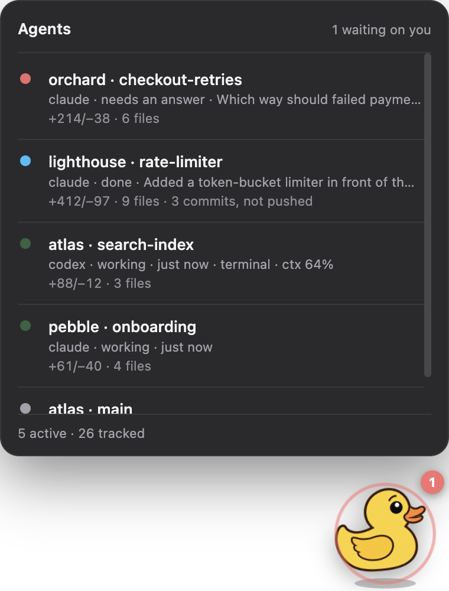
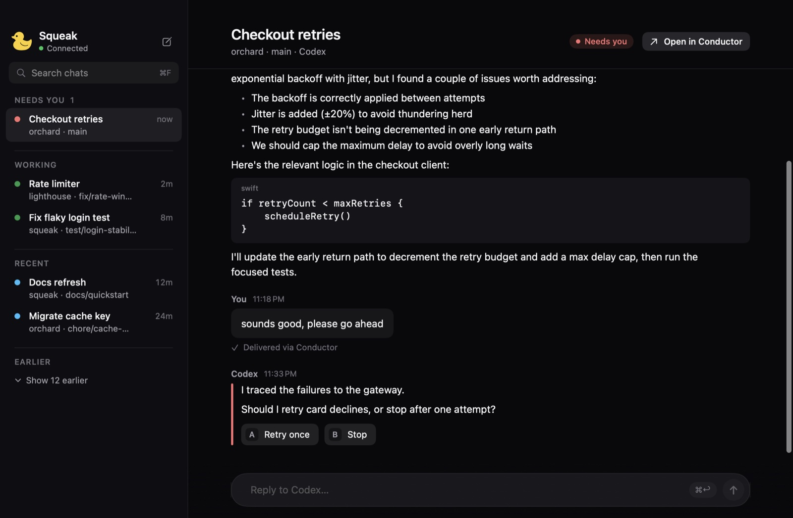
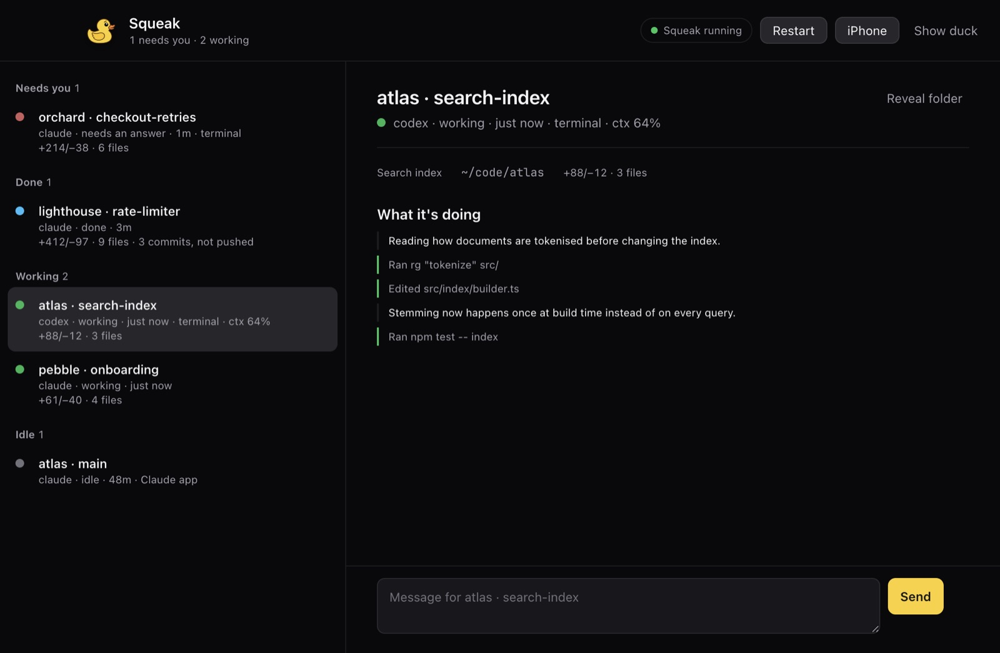
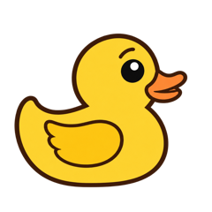
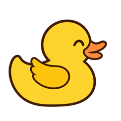
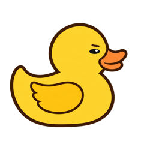
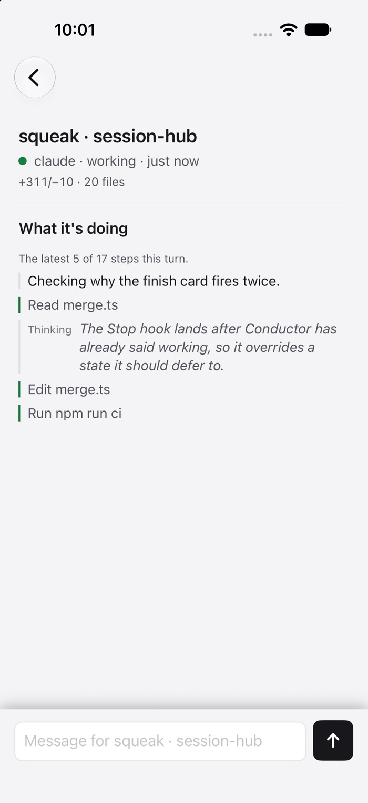

The right chat, proven
Squeak reads which chat is on screen from Conductor's own route, never from a tab label. Two chats can share a title.
Squeak watches every Claude Code and Codex session on your Mac, tells you which ones need you, and lets you answer from your Mac, your iPhone or Telegram.

The problem
Agents stop for you all the time: a permission prompt, a question with three options, a turn that quietly finished. They stop silently, in a tab you aren't looking at.
So you check. Conductor, then each terminal tab, then the Claude app, then Codex. Most of it is fine, and the one that wasn't has been stuck since lunch.
How it works
A small daemon on your Mac does the watching. Every surface (the duck, the window, the phone and Telegram) reads the same state from it, so no two can disagree.
Conductor's chats, claude and codex in Terminal, the Claude app's Code tab and Cowork, and the Codex app. It reads their transcripts and Conductor's own database, and takes hooks for the moments a file can't record, like a permission prompt.
Needs you, then done, then working, then idle. Only the sessions that matter right now reach a screen: on a real Mac that is 4 of 26.
"Done" means the turn really ended, not that a row was touched. It also notices a session that has stopped answering and says it seems stuck.
When an agent ends on lettered options, each one is a button. Tap B and Squeak types B into that chat's own Conductor window, or into the Terminal tab it runs in, so you watch the reply stream as if you had typed it.
Squeak for Mac
The window is the whole picture: what each agent said, what changed on disk, roughly what it cost, and a place to answer it.

The agent's own wordsIts last message in full, not a summary we wrote for it.
One tap per optionThe recommended one is marked, never pre-selected. The choice stays yours.
A receipt, not a guessA sent reply is checked against the chat before Squeak says it went.

While a session works, the window follows its current turn: Claude's thinking summaries, its notes between steps, and each command or edit as a plain label.
Type into the box and the message is queued in that chat, which is how you steer an agent without waiting for it to stop.
The duck
A rubber duck sits in the corner of your screen and in the menu bar. You can tell how things are going without reading anything. Click it for the list.

Wide eyes and a red badge. Something is blocked until you act.

A hop, for 45 seconds after a turn really ends.

A quick bob while any agent is mid-turn.
Nothing running. The duck is resting.

Away from the desk
Squeak for iPhone shows the same list and lets you reply. Telegram gets a card the moment something needs you: three short lines and a button per option.
Careful by design
Answering an agent means pressing keys in someone else's window. Every check below exists because the shortcut failed on a real screen.
Squeak reads which chat is on screen from Conductor's own route, never from a tab label. Two chats can share a title.
In Terminal, the agent must own the tab and show its own empty prompt. If it exited, the text would have run as a command, so Squeak refuses.
Anything already typed in the box is yours. Squeak won't paste over it, and won't answer a permission prompt with a stray digit.
A reply that may have gone is checked against the chat's history. It is never sent twice, and Squeak says plainly when it couldn't confirm.
A tiny signed helper alone holds the Accessibility grant. A grant to Node would be a grant to every Node tool on your Mac.
Squeak's hooks run inside your agents, so they background their request, give up after two seconds, and always exit cleanly.
Works with
Nothing to change in how you work. Squeak reads what your tools already write.
Install
Squeak 2.1.1 for Mac, as a disk image. It is free and ad-hoc signed rather than notarized, so macOS asks once before the first launch. After that, Squeak updates itself.
Open Squeak-2.1.1.dmg from your Downloads and drag Squeak onto Applications.
In Applications, right-click Squeak and choose Open, then Open again. If macOS still refuses, go to System Settings › Privacy & Security and press Open Anyway.
Squeak lives in the menu bar. It lists your Conductor chats and their history on its own; answering them also needs the Squeak service running on the Mac.
SHA-256: 380900273cdb4ae3fbbd6fd62cb327d2c7c5165c744afa86cfe93820b4ac15fe
Check it with shasum -a 256 ~/Downloads/Squeak-2.1.1.dmg
Squeak runs on macOS, with an iPhone app alongside.